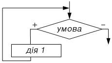
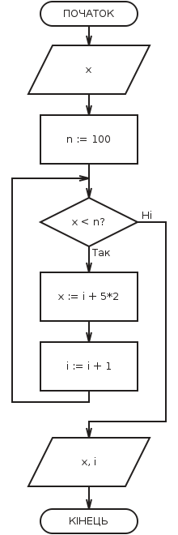

Цикл - керуюча структура, що організовує багаторазове виконання зазначеної дії.
Цикл "WHILE":

Виконання циклу "WHILE" починається з перевірки умови, тому такий різновид циклів називають циклами з передумовою. Перехід до виконання дії здійснюється тільки в тому випадку, якщо умова виконується, в іншому випадку відбувається вихід з циклу. Можна сказати, що умова циклу "ПОКИ" - це умова входу в цикл. В окремому випадку може виявитися, що дія не виконувалася жодного разу. Умова циклу необхідно підібрати так, щоб дії, що виконуються в циклі, привели до порушення його істинності, інакше відбудеться зациклення.
Зациклення - нескінченне повторення дій.
Приклад використання циклу з передумовою (малюнок з додатку):
